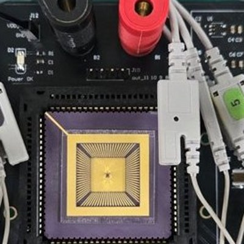
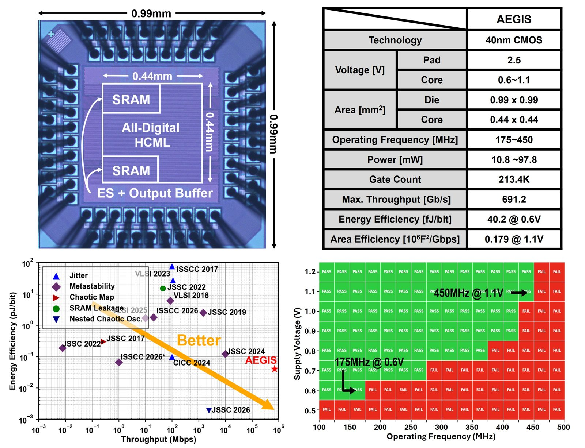

AEGIS: a 691.2 Gb/s all-digital random number generator
Fast true random number generators usually depend on mixed-signal entropy sources that must be redesigned at every process node. AEGIS uses standard SRAM as both the entropy source and the output buffer, and a lattice of 24 multiplier-free hyperchaotic cells to produce the random stream. The whole design is synthesizable, so it moves to a new process with no analog calibration.
- 691.2 Gb/s
- peak throughput
- 40.2 fJ/bit
- full chip at 0.6 V
- 1M traces
- no detectable leakage
Architecture and measurements
AEGIS passes all NIST SP 800-22 and SP 800-90B tests, with IID min-entropy above 0.994. First-order TVLA stays below |t| = 4.5 over one million power traces, and CNN and Transformer attacks on the same traces do no better than chance. I designed the 4-layer test PCB, which records output data and power traces together so every trace is labeled.


